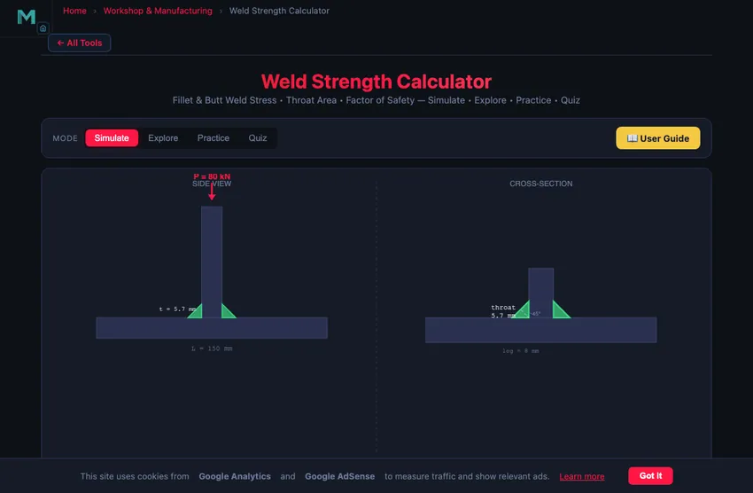

Weld Strength Calculator
Fillet & Butt Weld Stress • Throat Area • Factor of Safety — Simulate • Explore • Practice • Quiz
Display Controls
Σ Live equations — values substituted from current state
💡 What-if coach — insights from current values
1 Overview
The Weld Strength Calculator analyses the load-carrying capacity and factor of safety of welded joints. It supports 6 joint types — fillet transverse, fillet parallel, fillet combined, butt full penetration, butt partial penetration, and lap joint (double fillet) — with 4 electrode materials (E70xx, E90xx, E308, ER4043). The calculator computes throat thickness, throat area, actual stress, allowable stress, and provides a pass/fail verdict with factor of safety.
Understanding weld strength is essential for structural and mechanical engineers. The throat thickness of a fillet weld is t = 0.707 × leg size, and the allowable shear stress is typically 0.3 × UTS of the electrode. For butt welds in tension, the allowable stress is 0.6 × σy. This simulator handles all these calculations in real time.
2 Entering the Inputs
The simulator opens in Simulate mode with a fillet transverse joint, 8 mm leg size, 150 mm weld length, E70xx electrode, and 80 kN applied load. The canvas shows a cross-section of the welded joint with the weld throat dimension highlighted. Below are controls for joint type, dimensions, load, material, and a Run Simulation button.
Click Run Simulation to compute results. The readout cards display throat thickness, throat area, actual stress, allowable stress, factor of safety, verdict (Pass/Fail), maximum allowable load, and effective weld length. A load capacity bar provides a quick visual assessment.
Every dimension has a slider plus an editable stepper — use the [−]/[+] buttons or type an exact value and press Enter. Switch the Units control (top-right) between SI and Imperial at any time; sliders, steppers, readout cards, the canvas labels, and the calculation modal all convert (mm↔in, kN↔kip, MPa↔ksi). Internal calculations always remain in SI for accuracy.
3 Reading the Result
Select a Joint Type: Fillet Transverse (load perpendicular to weld), Fillet Parallel (load parallel to weld), Fillet Combined, Butt Full (complete joint penetration), Butt Partial, or Lap Joint (double fillet). Each type uses different stress formulas and effective area calculations.
Adjust Weld Leg Size (3–25 mm), Weld Length (25–500 mm), Plate Thickness (3–50 mm), Number of Welds (1–4), and Applied Load (1–500 kN). Choose the Load Type (Tension, Shear, or Combined) and Material (E70xx: UTS 483 MPa, E90xx: UTS 621 MPa, E308: stainless, ER4043: aluminium).
The effective length accounts for crater ends: Leff = L − 2 × leg. The throat area is A = t × Leff × n (number of welds). For combined loading, the equivalent stress uses σeq = √(σ² + 3τ²).
4 The Formulas Behind It
Explore mode covers concepts in four categories: Fundamentals (weld anatomy, throat thickness, effective length), Joint Types (fillet vs butt, transverse vs parallel loading, lap joints), Materials (electrode designations, allowable stresses, AWS/ISO standards), and Design Rules (minimum/maximum weld sizes, intermittent welds, weld symbol specifications).
Pay particular attention to the throat thickness concept — it is the shortest distance from the weld root to the face, equal to 0.707 times the leg size for equal-leg fillet welds. This single dimension controls the entire strength calculation.
5 Try a Problem
Practice mode generates random weld design problems — for example, “Calculate the throat area for two 10 mm fillet welds, each 200 mm long.” Enter your answer, click Check, and use Show Solution for step-by-step working. Your running score is tracked.
Quiz mode presents 5 randomised questions covering throat calculations, allowable stress, factor of safety, and joint type selection. Your final score and detailed review are displayed at the end.
6 Engineering Notes
- The throat thickness formula t = 0.707 × leg applies to equal-leg fillet welds. For unequal legs, use the shorter leg.
- Fillet weld allowable shear stress = 0.3 × electrode UTS. For E70xx: 0.3 × 483 = 144.9 MPa.
- Butt welds with full penetration are as strong as the base metal — use plate cross-section for stress calculations.
- Always subtract 2 × leg from the total weld length to get the effective length, accounting for start/stop craters.
- Minimum fillet weld size depends on the thicker plate: 3 mm for plates up to 6 mm, 5 mm for plates 6–13 mm, 6 mm for plates 13–19 mm.
- For the strongest connection, use transverse fillet welds (load perpendicular to weld axis) rather than parallel.
- Compare E70xx and E90xx electrodes in the simulator to see how a higher-strength electrode increases allowable load proportionally.
7 Tools, Toggles & Shortcuts
- Units (SI / Imperial): the top-right toggle converts every display between mm/kN/MPa and in/kip/ksi. Calculations stay in SI internally.
- Presets: one-click common joints (Bracket 50 kN, Lap 120 kN, CJP Butt, Stainless Rail, Alu Frame) load a full configuration instantly.
- Show Calculations: the button on the canvas opens a modal with the full step-by-step derivation (throat → area → allowable → stress → FOS) in classical mathematical notation, rebuilt for the current state.
- Canvas toggles: Show Equation, Show Stress Map, and Show Dimensions switch the on-canvas overlays on or off. The equation shows a live shear/stress result that rolls up when you Run.
- Learning panels: the collapsible Live equations and What-if coach cards substitute your current values and suggest how to pass or improve the factor of safety. Use Expand all / Collapse all.
- Export: the CSV button downloads all inputs and results; the PNG button saves the canvas with a watermark.
- Right-click the canvas for a menu: Export PNG, Export CSV, Copy stress value, Toggle stress map, and Reset.
- Reset restores the default fillet-transverse configuration and re-enables all overlays.
- For butt (groove) welds the Number of Welds control is disabled — a groove weld is a single weld and its area is not multiplied.
Weld Strength Analysis — Fillet and Butt Weld Design

Weld strength analysis is a critical topic in mechanical engineering and structural design. Welded joints are used extensively in bridges, pressure vessels, pipelines, structural steel frames, and machinery to create permanent connections between metal components. Engineers must verify that welded joints can safely carry applied loads without failure due to excessive stress, fatigue, or inadequate penetration. Understanding throat thickness, effective weld length, allowable stress, and factor of safety is essential for designing reliable welded structures.
A welded joint transfers load through the weld metal deposited between the base plates. The two primary weld types are fillet welds and butt welds. Fillet welds join two surfaces at an angle (typically a T-joint or lap joint) and have a triangular cross-section. Butt welds join two plates aligned end-to-end with either full or partial penetration into the groove. Each type has distinct stress calculations and design considerations governed by standards such as AWS D1.1 and Eurocode 3.
Fillet Weld Throat Thickness and Stress
The throat thickness is the most important dimension in fillet weld design. It equals the leg size multiplied by cos(45°), giving t = 0.707 × leg size. For example, a 10 mm fillet weld has a 7.07 mm throat. The effective length of a fillet weld accounts for crater ends: L_eff = L − 2 × leg. The throat area is A = t × L_eff, and the shear stress across the throat is τ = P / A. The allowable shear stress for fillet welds is typically 0.3 × UTS of the electrode material.
Butt Weld Design and Combined Loading
For butt welds with full penetration, the weld is as strong as the base metal, and stress is calculated using the plate cross-section: σ = P / (t × L). Partial penetration butt welds use the effective throat depth instead of the full plate thickness. The allowable stress depends on the load: roughly 0.6 × σy for tension but only about 0.4 × σy for shear — switch the Load Type control in the simulator to see the factor of safety change. Under combined loading (simultaneous tension and shear), engineers apply the von Mises equivalent stress criterion: σ_eq = √(σ² + 3τ²). The factor of safety is the ratio of allowable stress to actual stress, and a value of 1.0 or greater indicates the weld passes the design check.
The 0.707 Factor — Why It’s on Every Weld Drawing
The most-quoted number in weld design is t = 0.707 × leg size. It comes from geometry: a fillet weld has a triangular cross-section with equal legs at 90°. The throat (the shortest path through the weld metal) sits at 45° to both legs. The hypotenuse of an isoceles right triangle is √2 times the leg; the perpendicular distance to that hypotenuse from the corner is leg×cos45° = leg/√2 = 0.707×leg.
A 10 mm fillet weld therefore has a throat of 7.07 mm. Stress calculations always use the throat (the failure plane), not the leg. This is why specifying “6 mm fillet” on a drawing means a leg of 6 mm with effective throat 4.24 mm — not the other way around.
A Fillet-Weld Design Example
A bracket carries a 50 kN tensile load on a 200 mm long fillet weld. Choose a leg size for safety factor 1.5 against shear failure. Use E6010 electrode (UTS = 410 MPa, allowable shear τallow = 0.3 × 410 = 123 MPa).
| Step | Working | Result |
|---|---|---|
| Effective length (crater allowance) | Leff = 200 − 2×leg (assume leg ~ 8 mm) | ~184 mm |
| Required throat area | A = P·FOS / τallow = 50,000×1.5 / 123 | 610 mm² |
| Required throat thickness | t = A / Leff = 610/184 | 3.31 mm |
| Required leg size | leg = t/0.707 = 3.31/0.707 | 4.7 mm |
| Round up to standard | (standard fillet sizes: 3, 4, 5, 6, 8, 10 mm) | 5 mm fillet |
| Verify: throat 5×0.707, Leff = 200−10 = 190, area, stress | 3.54 mm, 3.54×190 = 672 mm², τ = 50,000/672 | 74.4 MPa (FOS = 1.65 ✓) |
Practical note: minimum fillet size is often code-controlled. AWS D1.1 specifies a 6 mm minimum for plates 13−19 mm thick (5 mm for 6−13 mm plates) to ensure proper heat input and avoid cracking. So even if calculation gives 3.3 mm, the code minimum applies.
Fillet Weld Size & Capacity Tables (AWS D1.1)
Minimum Fillet Weld Size — AWS D1.1 Table 5.7
Set by the thickness of the thicker part joined. The minimum exists to stop the weld cooling too fast and cracking, so it is a fabrication rule, not a strength rule — you may not go below it even if the calculated stress is tiny.
| Thicker part t mm | Thicker part t in | Min leg size mm | Min leg size in |
|---|---|---|---|
| ≤ 6 | ≤ 1/4 | 3 | 1/8 |
| > 6 to 12 | > 1/4 to 1/2 | 5 | 3/16 |
| > 12 to 20 | > 1/2 to 3/4 | 6 | 1/4 |
| > 20 | > 3/4 | 8 | 5/16 |
Maximum fillet size along an edge: for material under 6 mm (1/4 in) the leg may equal the thickness; at 6 mm and above it must not exceed thickness − 2 mm (1/16 in), so the edge is not melted away.
Allowable and Design Shear Stress by Electrode
Fillet welds are designed on shear through the throat regardless of load direction. ASD uses 0.30 FEXX; LRFD uses φ = 0.75 with Rn = 0.60 FEXX.
| Electrode | FEXX ksi | FEXX MPa | ASD allowable ksi | ASD allowable MPa | LRFD design ksi | LRFD design MPa |
|---|---|---|---|---|---|---|
| E60xx | 60 | 414 | 18.0 | 124 | 27.0 | 186 |
| E70xx | 70 | 483 | 21.0 | 145 | 31.5 | 217 |
| E80xx | 80 | 552 | 24.0 | 166 | 36.0 | 248 |
| E90xx | 90 | 621 | 27.0 | 186 | 40.5 | 279 |
| E100xx | 100 | 689 | 30.0 | 207 | 45.0 | 310 |
| E110xx | 110 | 758 | 33.0 | 227 | 49.5 | 341 |
Fillet Weld Capacity per Unit Length (E70xx, ASD)
Capacity q = 0.707 × leg × 0.30 FEXX. Multiply by the effective weld length to get the joint capacity.
| Leg size mm | Leg size in | Capacity kN per metre | Capacity kip per inch |
|---|---|---|---|
| 3 | 1/8 | 307.3 | 1.86 |
| 5 | 3/16 | 512.2 | 2.78 |
| 6 | 1/4 | 614.7 | 3.71 |
| 8 | 5/16 | 819.6 | 4.64 |
| 10 | 3/8 | 1024.4 | 5.57 |
| 12 | 1/2 | 1229.3 | 7.42 |
Based on AWS D1.1 / AISC 360 for matched-strength filler on carbon steel. Always confirm against the governing edition of the code for your project, and check base-metal shear rupture on the connected part as well as the weld itself — the base metal often governs.
Common Weld-Failure Modes
- Throat shear. The calculated mode above. Most fillet-weld failures actually fail elsewhere; pure throat shear is rare for properly executed welds.
- Weld-toe cracking. Fatigue cracks initiate at the sharp corner where weld metal meets base metal. Toe grinding (smoothing this corner) extends fatigue life dramatically — standard practice in pressure vessels and offshore structures.
- Heat-affected zone (HAZ) failure. Quenched-and-tempered steels lose tempering near the weld due to heat. HAZ may be the weakest region in the joint.
- Lamellar tearing. Steel plate has lower through-thickness strength than in-plane strength. Heavy welds on thick plates can tear horizontally just below the weld. Z-grade steel (with controlled sulphur and rolling) avoids this.
Codes and Standards
- AWS D1.1 — Structural Welding Code — Steel. The dominant North American code.
- Eurocode 3 (EN 1993-1-8) — Design of joints. European structural-steel welding rules.
- ASME Section IX — welding qualification for pressure-vessel construction.
- BS EN ISO 14555 — stud welding qualification.
Explore Related Simulators
If you found this weld strength calculator helpful, explore our Welding Symbol Trainer, Bolted Joint Calculator, Stress-Strain Diagram Simulator, and Mohr's Circle Simulator for more hands-on practice.